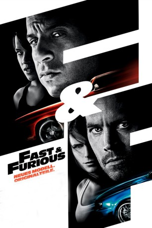

#240 Fast and Furious 4 - Neues Modell. Originalteile.
Alternativ: Fast & Furious
 
 IMDB-Wertung: 6.6 / 10
IMDB-Wertung: 6.6 / 10  Metascore: 46
Metascore: 46 
Schnelle Autos und schnelles Geld hat Dom Toretto auch nach seiner Flucht nicht hinter sich gelassen. Er klaut in der dominikanischen Republik Tanklastzüge - während der Fahrt. Ein Mord sorgt für das Wiedertreffen von Toretto und Brian O'Conner in L.A. und gemeinsam - wenn auch widerwillig - stellen sie sich einem übermächtigen Drogenkartell. Bei packenden Rennen durchs nächtliche L.A. und auf wilden Verfolgungsjagden durch die mexikanische Wüste gibt es aufheulende Motoren und eine deftige Beschleunigung.
Jahr: 2009
Dauer: 107 Minuten
FSK: 12
Land: USA Studio: Universal PicturesTonspuren: DTS - ,
Untertitel: Deutsch,
Auflösung: 1080p (1920x800) Größe: 9277 MB
Genre: Action, Krimi, Thriller
Regisseur: Justin Lin
Drehbuch: Chris Morgan, Gary Scott Thompson
Soundtrack: Brian Tyler
Darsteller:
Datei: X:\7+mehr(A-Z)\Fast and Furious\Fast and Furious 4 - Neues Modell. Originalteile. (2009, FSK12, 1920x800).mkv seit 15.02.2015
Festplatte: HD Collection-7+mehr(A-Z)+Person
 Es gibt insgesamt 13 Filme in der Gruppe '7+mehr(A-Z)\Fast and Furious'
Es gibt insgesamt 13 Filme in der Gruppe '7+mehr(A-Z)\Fast and Furious'